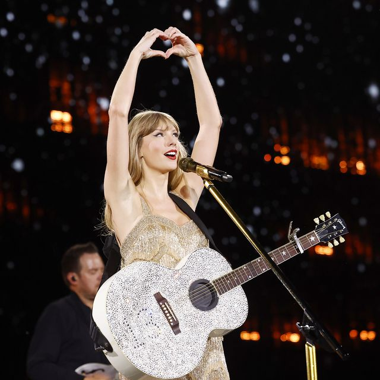
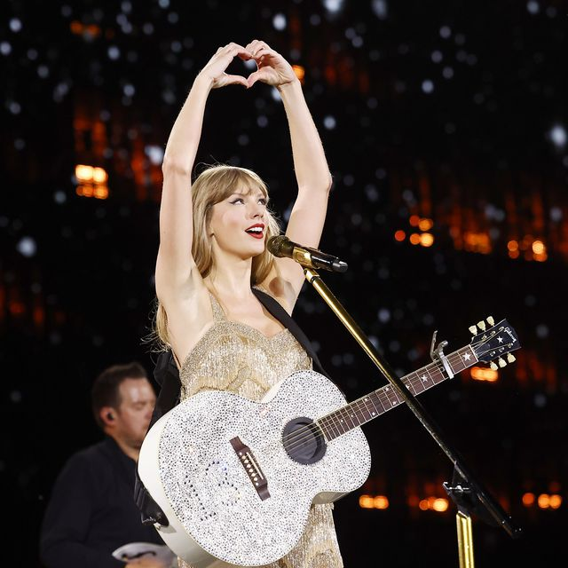

Some more info on The Tortured Poets Department: The Tortured Poets Department (Wikipedia)
Some more pictures:



Unfortunately, there is no set era for Swift's debut album, Taylor Swift. However, during the acoustic set guitar song in the movie, she chose Our Song to play, most likely representing Debut with it as it is one of, if not the most, the well-known songs in that album. She chose You're On Your Own, Kid for the second one, most likely referencing the friendship bracelet trend.
Before March 31, 2023, invisible string (folklore) was the first song played in the folklore era. However, after March 31, it was replaced by the 1 (folklore). This is rumored to be because of her breakup with Joe Alwyn, as invisible string is a love song while the 1 is a breakup song.
After July 7, her release of the Speak Now (Taylor's Version) album, the song Long Live (Speak Now (Taylor's Version)) was added to the setlist, joining Enchanted and increasing the Speak Now (Taylor's Version) era's song count to two.
On July 22, Swift played with the HAIM sisters, so her collab with them, no body, no crime (feat. the HAIM sisters) (evermore) replaced 'tis the d-mn season (evermore) until August 24 as the first song played in the evermore era.
For all the shows where Phoebe Bridgers performed as a supporting act, Swift would play her collab with her, Nothing New (feat. Phoebe Bridgers) (From The Vault) (Red (Taylor's Version)), during the Red (Taylor's Version) era.
On May 22 & 23, Ice Spice and Swift performed the version of Karma (Midnights) featuring Ice Spice
Swift announced both her re-records released in 2023 (Speak Now (Taylor's Version) and 1989 (Taylor's Version)) during the Eras Tour acoustic set
When Swift announced Speak Now (Taylor's Version), on May 5, 2023, she would play Sparks Fly as the surprise guitar song in a maroon dress, which is a fan-favorite and Track 2 of the Speak Now album. When Speak Now (Taylor's Version) released on July 7, 2023, she premiered the I Can See You (Taylor's Version) music video as well as bringing her ex-boyfriend and close friend Taylor Lautner on stage (who also starred in the music video).
When Swift announced 1989 (Taylor's Version), on August 9, 2023 (8/9), during the show, she would change some outfits from their usual color to the signature 1989 sky/light blue. These eras included Speak Now, folklore, 1989, and Midnights. Fans had speculated she would announce it on August 9 (as it was 8/9, referring to 1989), as well as it being the last show of the 2023 U.S. tour (she will return in 2024). During the acoustic set guitar song, she would announce 1989 (Taylor's Version) and play New Romantics, also a fan favorite and the last track of the deluxe version of the album.
The Eras Tour also caused one particular song to shoot up in popularity: Cruel Summer (Lover). Cruel Summer, track 2 on the album Lover, was not a single before it went viral thanks to the tour. Swift made it a single after it reached #49 on the Billboard Hot 100 charts. After the release of the Eras Tour movie, Swift would release a streaming compliation called The Cruelest Summer, which included a live version of Cruel Summer as well as an LP Giobbi remix version. Cruel Summer would top the charts for four non-consecutive weeks (cut in by Is It Over Now? (Taylor's Version) from the release of 1989 (Taylor's Version)). So far (as of February 12, 2024), Cruel Summer has spent a whopping 29 weeks in the top ten of the Billboard Hot 100 charts, which is an amazing accomplishment especially because it was originally released in 2019. Cruel Summer also surpassed Blank Space (original/stolen version) as Swift's most streamed song on Spotify, hitting 1.74B streams over Blank Space's 1.71B (as of February 17, 2024).
Swift has a new album, called The Tortured Poets Department, coming out April 19, 2024, and many fans are speculating if there will be a new era added to the tour.
Some more info on The Tortured Poets Department: The Tortured Poets Department (Wikipedia)
Some more pictures:
